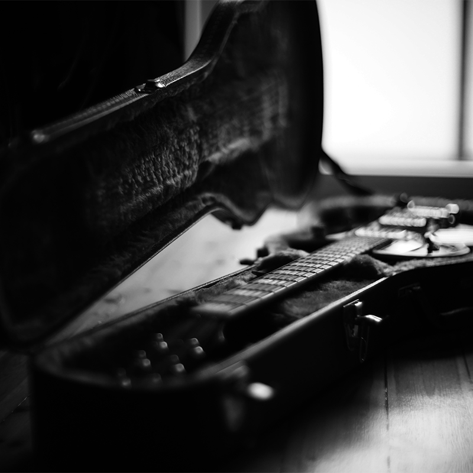
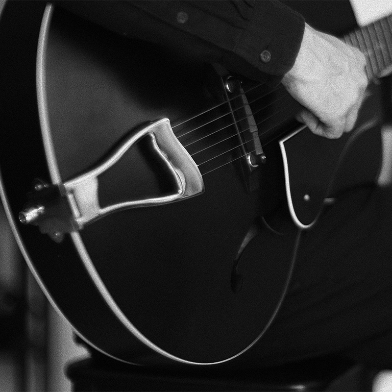
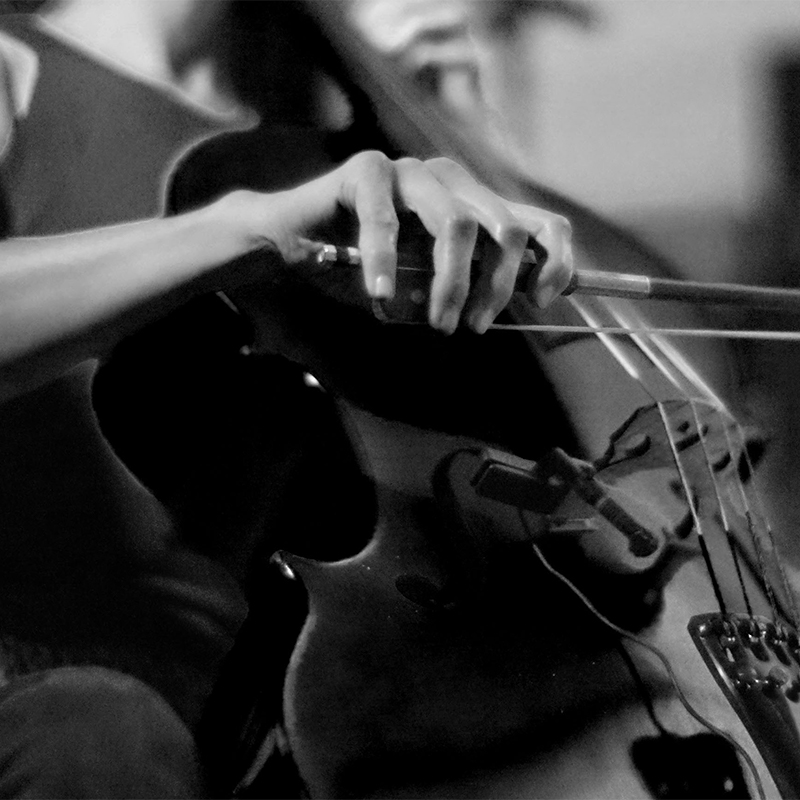
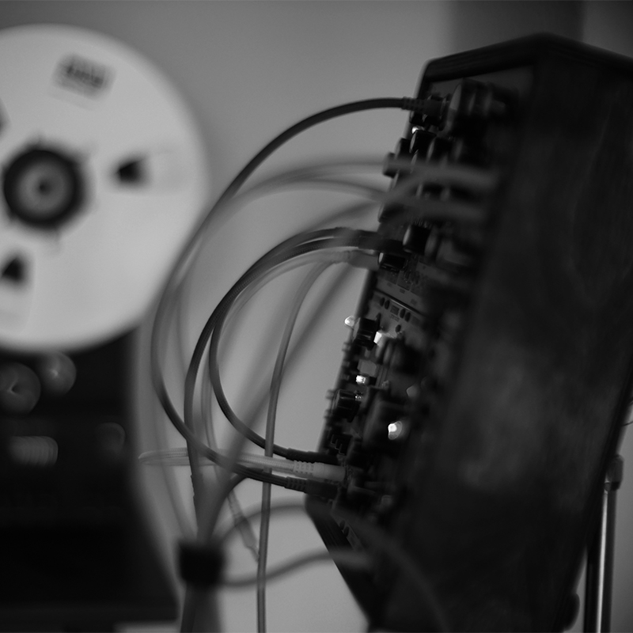

About
Releases
Photos/Videos
Feel free to use for any kind of promotional purpose.

Logo (215 kb)
Portrait (2.4 mb)- 
Electric Guitar (1.7 mb) - 
Archtop Guitar (5.7 mb) - 
Cello (2.2 mb) - 
Synthesizer (2.0 mb)


Contact
Feel free to contact me through social media.
This website does not use cookies or any kind of tracking method.
© 2022, All rights reserved